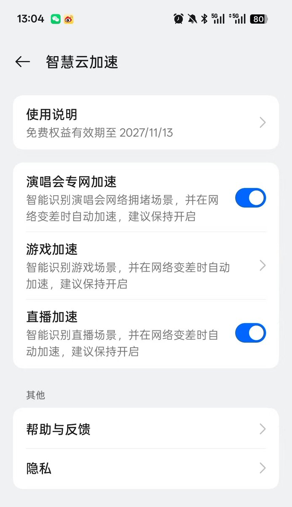
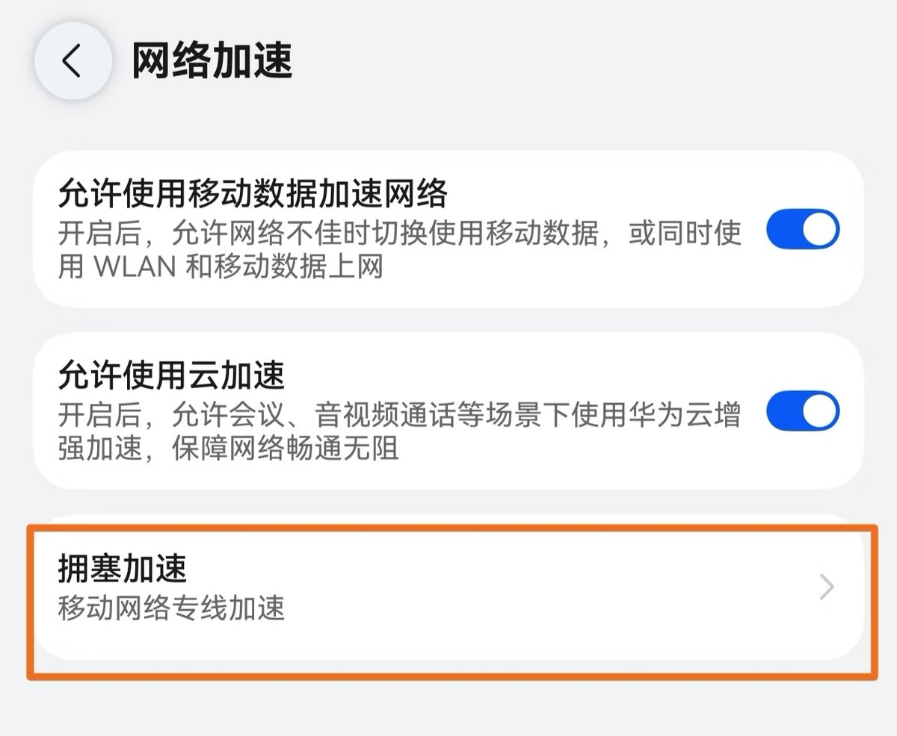
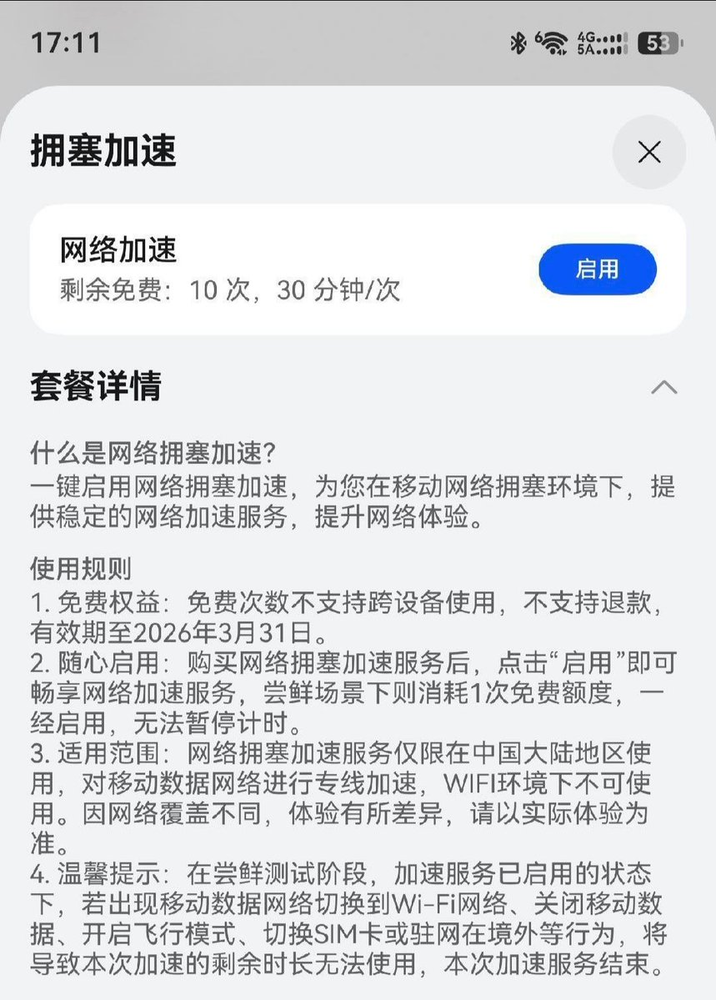
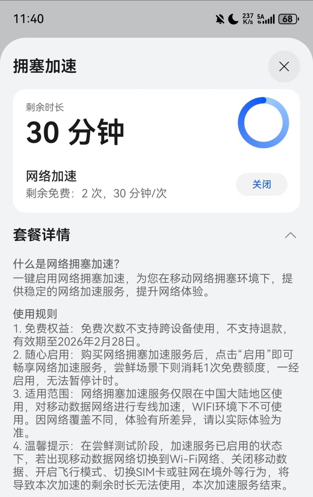

ColorOS里面这个「智慧云加速」好像没啥鸟用，像是给手机开了个迅游加速器（VPN），反而打游戏延迟更高了！
感觉不如华为那个基站调度的能力，不给特权还怎么降授权费，比QCI6还牛逼，遥遥领先！
再加上华为基站的灵犀通信技术加持，别说演唱会了，在学校都能开启「5A」网络抢网。

感觉不如华为那个基站调度的能力，不给特权还怎么降授权费，比QCI6还牛逼，遥遥领先！
再加上华为基站的灵犀通信技术加持，别说演唱会了，在学校都能开启「5A」网络抢网。




不愧是遥遥领先，拥有直接调度基站的能力，开通VIP优先通道实测比QCI6还有用！
华为Mate80系列用户免费送10次，每次30分钟，仅支持移动和电信，赶紧用起来不然下个月就没有了😆 https://t.co/UyaidprJMP
华为Mate80系列用户免费送10次，每次30分钟，仅支持移动和电信，赶紧用起来不然下个月就没有了😆 https://t.co/UyaidprJMP